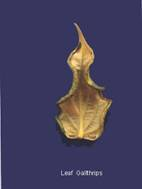

| Home |
| PEST OF PEPPER |
mAJOR pESTS |
| 1. Pollu beetle |
| 2. Top shoot borer |
| 3. Berry gall midge |
| 4. Marginal gall thrips |
| 1. Coconut scale |
| 2. Whitefly |
| Questions |
| Download Notes |
PEPPER :: MAJOR PEST :: MARGINAL GALL THRIPS
4. Marginal gall thrips: Liothrips karnyi (Thysanoptera: Thripidae)
Distribution and status: India
Host range: Pepper
Damage symptoms
Both nymphs and adults feed on leaves and cause formation of marginal folded galls on them. Presence of white or creamy white nymphs and adults inside the marginal galls is the typical symptom of attack. In severe cases of attack, whole plant becomes stunted and affects formation of spikes.
|  |
Bionomics
Eggs are laid in single within the marginal leaf folds or on the leaf surface, egg period 6-8 days. Nymphs whitish and sluggish, nymphal period 9-13 days, pupal period, 2 to 3 days adult longevity is 7-9 days.
Management
Spray monocrotphos 36 SL 750 ml or dimethaote 30 EC 1.0 L or chlorpyriphos 1.5 L in 500-1000 L water